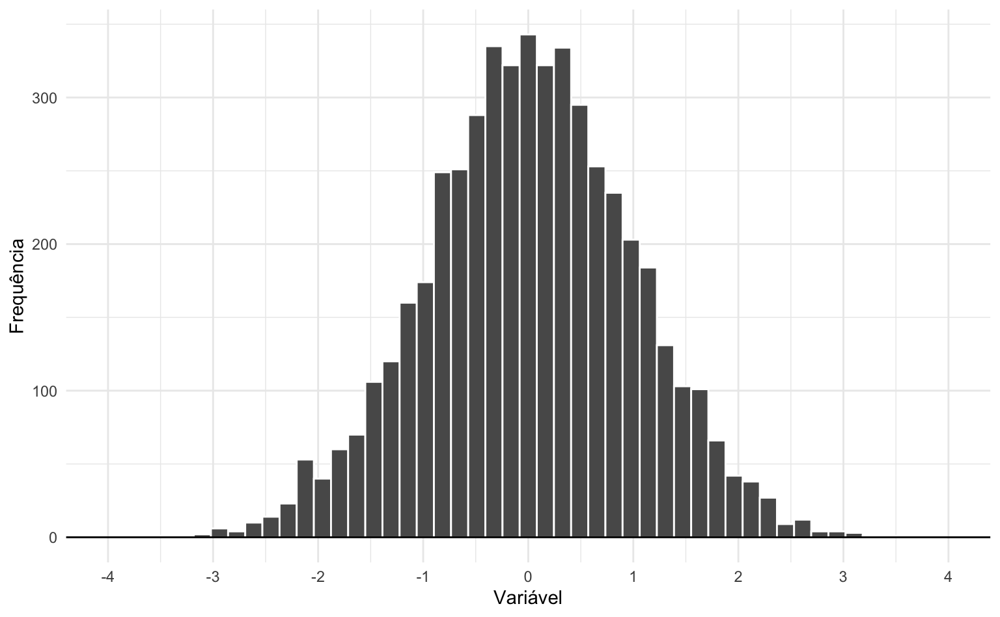
Histograma
Um histograma serve para visualizar a distribuição de um conjunto de dados. Ele consiste em colunas que representam a frequência de ocorrência de determinados valores nos dados: quanto mais alta for a coluna, mais frequente é uma observação. Isto permite ver a forma da distribuição dos dados e identificar padrões e tendências.
Histogramas aparecem naturalmente na hora de visualizar, por exemplo:
- Distribuição de notas de alunos em testes padronizados.
- Distribuição da renda familiar na população de um país.
- Distribuição de preços de imóveis numa cidade.
- Distribuição da altura das pessoas.
- Distribuição de variáveis aleatórias em estatística.
Neste post vamos entender como montar histogramas no R usando o pacote ggplot2. Primeiro vamos trabalhar um exemplo, passo a passo, para visualizar a taxa de poupança nos EUA aos longo dos anos. Depois vamos trabalhar um exemplo mais complexo, analisando a distribuição do preço dos imóveis no Texas, EUA.
R
Antes de começar é preciso instalar o pacote ggplot2. Um pacote é um conjunto de funções, que costumam ter a mesma finalidade; no caso do ggplot2 as funções são feitas para visualizar dados.
O R tem um funcionalidade embutida que facilita o download e a instalação de pacotes. Usamos a função install.packages("nome_do_pacote"). Então, para instalar o ggplot2 executamos o código abaixo.
Se você estiver usando o R fora do RStudio é provável que a função abaixo solicite que você escolha um servidor a partir de uma lista. Escolha o que for mais próximo de onde você está. No meu caso eu sempre utilizo o “Brazil (SP 1) [https] - University of Sao Paulo, Sao Paulo”. Se você usa o R dentro do RStudio pode ignorar este comentário.
# Instalar o pacote ggplot2 (se necessário)
install.packages("ggplot2")A cada vez que abrimos o R precisamos carregar os pacotes adicionais que instalamos previamente. Isto pode parecer trabalhoso à primeira vista, mas faz muito sentido: evita conflitos entre pacotes e é mais eficiente. Considere que cada projeto de R tem um objetivo diferente. Neste projeto, por exemplo, queremos visualizar dados, então não precisamos de outros pacotes além do ggplot2.
Para carregar o ggplot2 usamos a função library (biblioteca).
# Carrega o pacote ggplot2
library(ggplot2)ggplot2
Para criar um histograma com o pacote ggplot2 no R, usamos a função geom_histogram().
A estrutura de um gráfico do ggplot2 parte de três elementos básicos: (1) a base de dados, isto é, um objeto data.frame; (2) um mapeamento de variáveis, feito com auxílio da função aes(); e (3) a escolha da forma do gráfico, feito com as funções geom.
O ggplot2 funciona adicionando camadas e elementos subsequentemente sobre um gráfico inicial. Cada elemento novo que adicionamos ao gráfico é somado usando o operador +.
Para resumir o processo: começamos com a função ggplot() e vamos adicionando geoms, funções auxiliares que especificam a forma do gráfico. Este processo construtivo de adicionar elementos a um gráfico é o principal diferencial do ggplot.
Ou seja, temos três elementos essenciais:
- Dados - nossa tabela de dados.
- Função
aes()- que transforma os dados em objetos visuais. - Objeto geométrico (
geom) - que escolhe qual o formato destes objetos visuais.
Esta estrutura básica é esquematizada no pseudo-código abaixo.
ggplot(data = base_de_dados, aes(x = variavel_x)) +
geom_histogram()Vamos montar um exemplo usando a base economics, que vem carregada junto com o pacote ggplot2. Esta base compila uma série de informações econômicas e demográficas no período julho/1967 a abril/2014 nos EUA. Para explorar os dados podemos usar a função head() que exibe as primieras linhas da tabela.
head(economics)| date | pce | pop | psavert | uempmed | unemploy |
|---|---|---|---|---|---|
| 1967-07-01 | 507 | 198712 | 13 | 4 | 2944 |
| 1967-08-01 | 510 | 198911 | 13 | 5 | 2945 |
| 1967-09-01 | 516 | 199113 | 12 | 5 | 2958 |
| 1967-10-01 | 512 | 199311 | 13 | 5 | 3143 |
| 1967-11-01 | 517 | 199498 | 13 | 5 | 3066 |
| 1967-12-01 | 525 | 199657 | 12 | 5 | 3018 |
Inicialmente, vamos nos focar na coluna psavert, que é a taxa de poupança individual, isto é, o percentual da renda que as famílias poupam. O código abaixo monta um histograma desta variável.
ggplot(data = economics, aes(x = psavert)) +
geom_histogram()Vamos decompor o código acima em partes. Primeiro temos que informar onde estão os nossos dados. Fazemos isto dentro da função ggplot() usando o argumento data = economics.
Depois, precisamos indicar qual a variável (coluna) que queremos visualizar, isto é, indicar qual é a variável que deve ser mapeada em um elemento visual. Fazemos isto usando a função aes(x = psavert).
Por fim, como queremos desenhar um gráfico de histograma escolhemos o geom_histogram(). Esta última função é adicionada (somada) à função inicial com o sinal de soma +.
Segue abaixo o código comentado junto com o gráfico produzido. Vemos que, historicamente, a taxa de poupança gira entre 5% e 15% da renda pessoal.
# Chamada inical da função ggplot
ggplot(
# Define a base de dados
data = economics,
# Escolhe qual a variável deve ser visualizda
aes(x = psavert)
) +
# Escolhe o tipo de gráfico (histograma)
geom_histogram()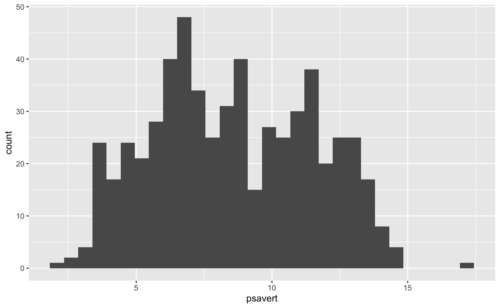
Elementos estéticos
Podemos customizar um gráfico de ggplot modificando os seus elementos estéticos. Um elemento estético pode assumir dois tipos de valor: constante ou variável. Um valor constante é um número ou texto, enquanto uma variável é uma coluna da nossa base de dados.
Um gráfico de histograma tem cinco elementos estéticos principais:
color- Define a cor do contorno da coluna.fill- Define a cor que preenche a coluna.alpha- Define o nível de transparência das cores.binwidth- Define a largura da coluna.bins- Define o número de colunas.
Os dois últimos elementos são parâmetros estatísticos que são interpretados como estéticos neste contexto. Vamos explorar cada um destes elementos em exemplos abaixo.
Vale notar que o argumento x também é um elemento estético. Mais especificamente ele é um elemento estético variável, logo é mapeado com a função aes(), e é obrigatório (pois é exigido pela função geom_histogram())
Cores
Temos duas opções principais de cores: color é a cor da linha do contorno da coluna e fill é a cor que preenche o interior da coluna. O código abaixo ilustra como utilizar estes argumentos dentro da função geom_histogram(). Note que ambos os elementos estéticos são constantes.
ggplot(data = economics, aes(x = psavert)) +
geom_histogram(color = "white", fill = "steelblue")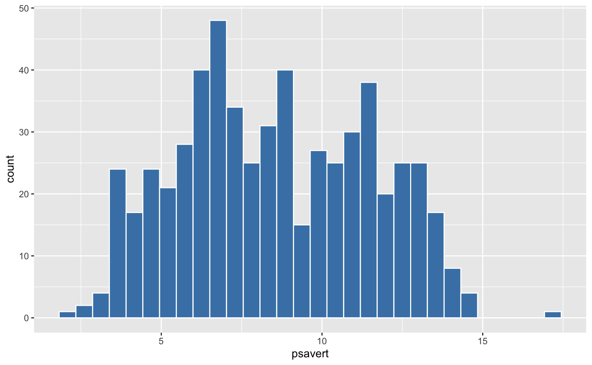
Também podemos fazer referência a cores via código hexadecimal. No exemplo abaixo uso as cores "#e76f51 (laranja-escuro) e "#264653" (azul-escuro).
ggplot(data = economics, aes(x = psavert)) +
geom_histogram(color = "#E76F51", fill = "#264653")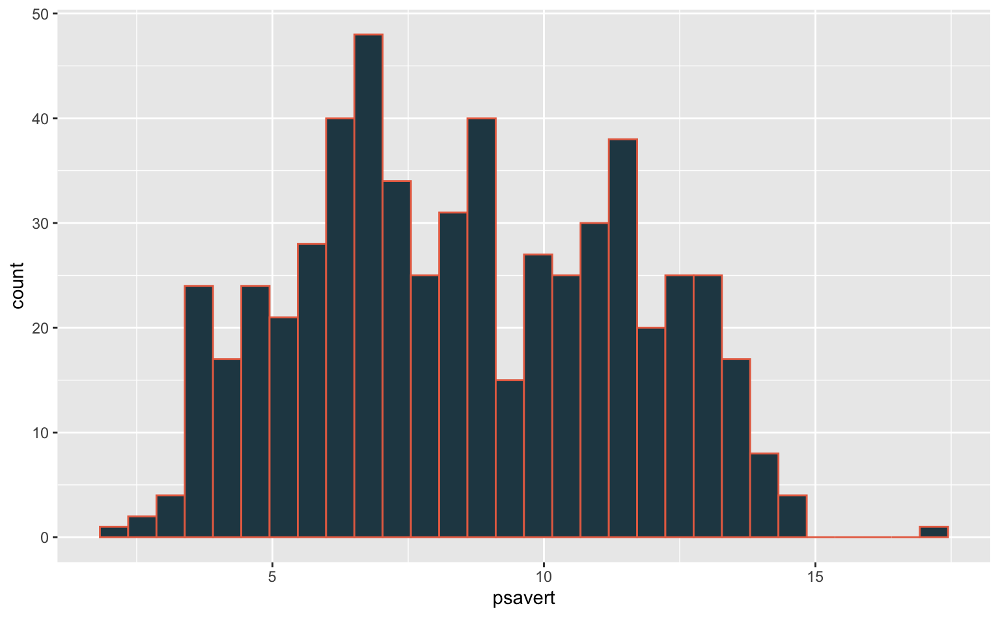
Transparência
O parâmetro alpha controla o nível de transparência das cores. O valor dele deve estar sempre entre 0 e 1. Quanto mais próximo de 0, mais transparente será o gráfico final. Os gráficos abaixo mostram o efeito de alguns valores distintos de alpha.
ggplot(data = economics, aes(x = psavert)) +
geom_histogram(alpha = 0.9)
ggplot(data = economics, aes(x = psavert)) +
geom_histogram(alpha = 0.7)
ggplot(data = economics, aes(x = psavert)) +
geom_histogram(alpha = 0.3)
ggplot(data = economics, aes(x = psavert)) +
geom_histogram(alpha = 0.1)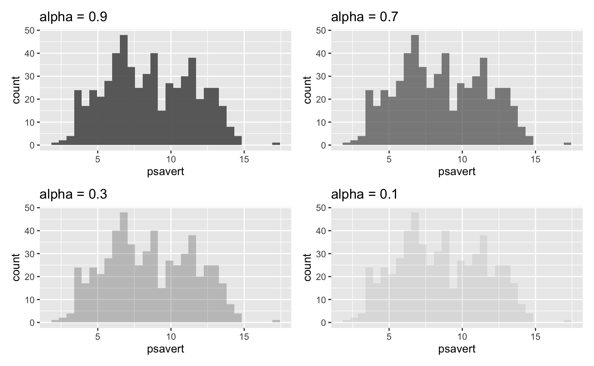
Colunas
Podemos controlar o número de colunas do histograma de duas formas: (1) escolhendo o número via bins; (2) escolhendo o tamanho dos intervalos/colunas via binwidth.
A escolha padrão da função geom_histogram() é definir bins = 30. Isto raramente resulta num gráfico ideal. O número ótimo de intervalos depende do tipo de dado que estamos visualizando.
Em geral, um número muito pequeno resulta num gráfico agrupado demais, enquanto um número muito grande resulta num gráfico disperso demais. Em ambos os casos fica difícil enxergar o padrão nos dados.
O código abaixo reduz o número de intervalos para 5. Note como as observações estão mais agrupadas.
ggplot(economics, aes(x = psavert)) +
geom_histogram(bins = 5)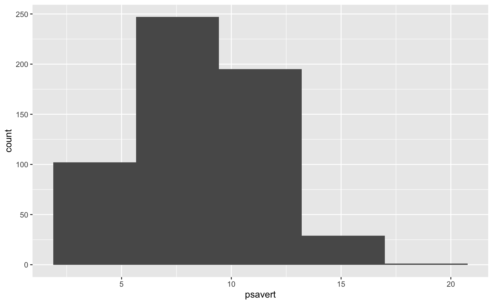
Já o código seguinte aumenta o número de intervalos para 70. Agora conseguimos identificar mais facilmente os outliers, mas as observações estão dispersas demais para conseguir enxergar algum tipo de padrão.
ggplot(economics, aes(x = psavert)) +
geom_histogram(bins = 70)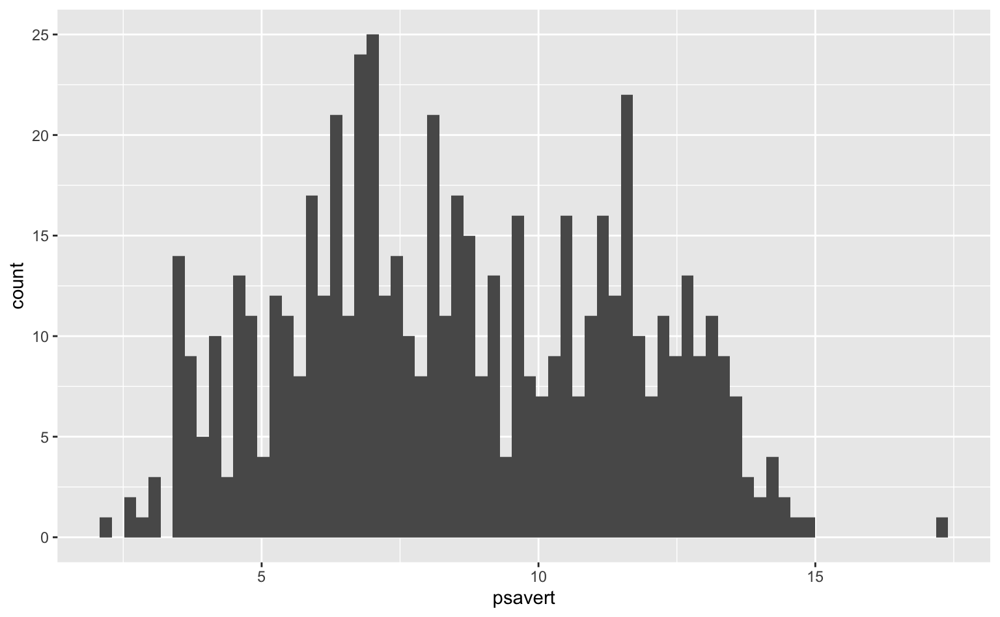
Por fim, o gráfico abaixo tenta chegar num meio termo. Vemos que a taxa de poupança tem uma distribuição parecida com uma normal e possui alguns outliers tanto à esquerda como à direita.
ggplot(economics, aes(x = psavert)) +
geom_histogram(bins = 15)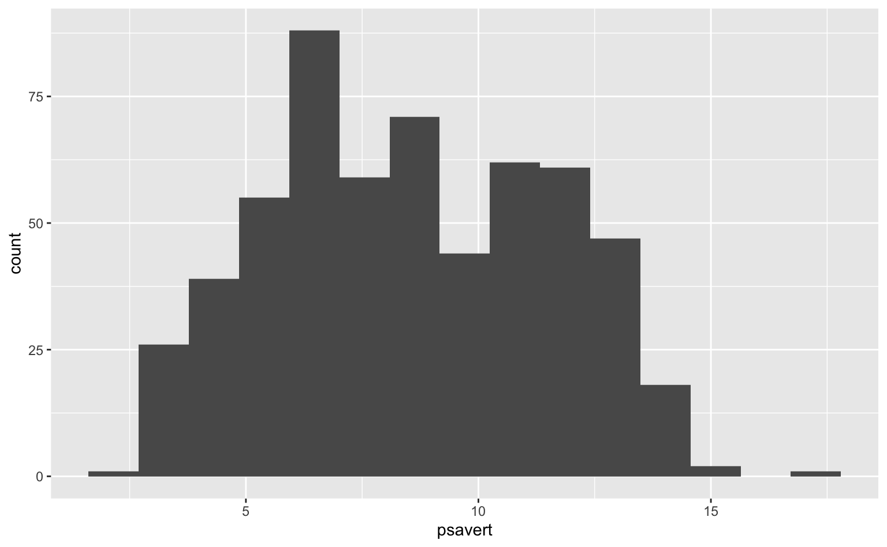
Como mencionado acima, podemos definir o tamanho dos intervalos usando binwidth. Como nossa variável está expressa em formato de percentual, podemos experimentar intervalos de tamanho unitário. O resultado, neste caso, é bastante satisfatório.
ggplot(economics, aes(x = psavert)) +
geom_histogram(binwidth = 1)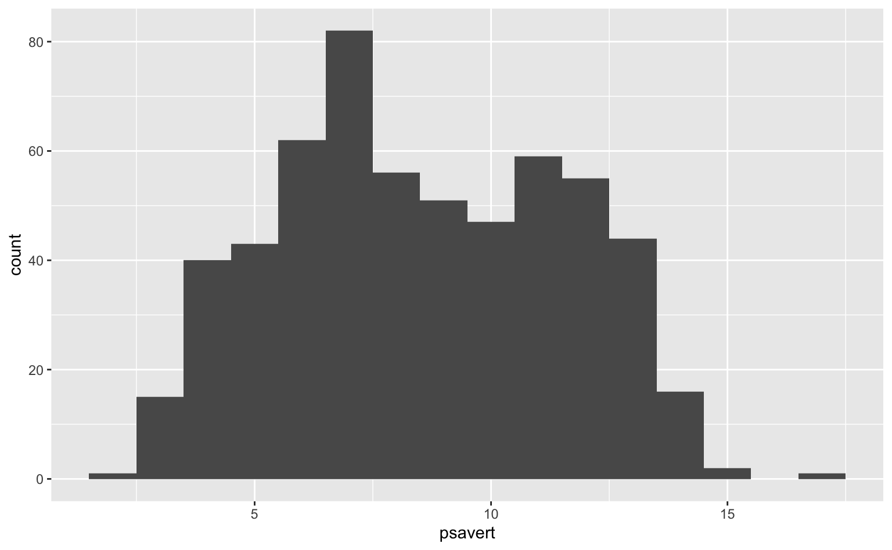
Renomeando os eixos do gráfico
É muito importante que um gráfico seja o mais auto-explicativo possível. Para isso precisamos inserir informações relevantes como título, subtítulo e fonte.
A função labs() permite facilmente renomear os eixos do gráfico. Os argumentos principais são os abaixo.
title- título do gráficosubtitle- subtítulo do gráficox- título do eixo-x (horizontal)y- título do eixo-y (vertical)caption- legenda abaixo do gráfico (em geral, a fonte)
Novamente, utilizamos o sinal de soma para adicionar estes elementos ao gráfico.
ggplot(economics, aes(x = psavert)) +
geom_histogram(binwidth = 1, color = "white") +
labs(
# Título
title = "Taxa de poupança pessoal nos EUA",
# Subtítulo
subtitle = "Distribuição da taxa de poupança, como proporção da renda disponível, no período 1967-2014.",
# Nome do eixo-x
x = "Taxa de poupança (%)",
# Nome do eixo-y
y = "Frequência",
# Nota de rodapé
caption = "Fonte: FREDR"
)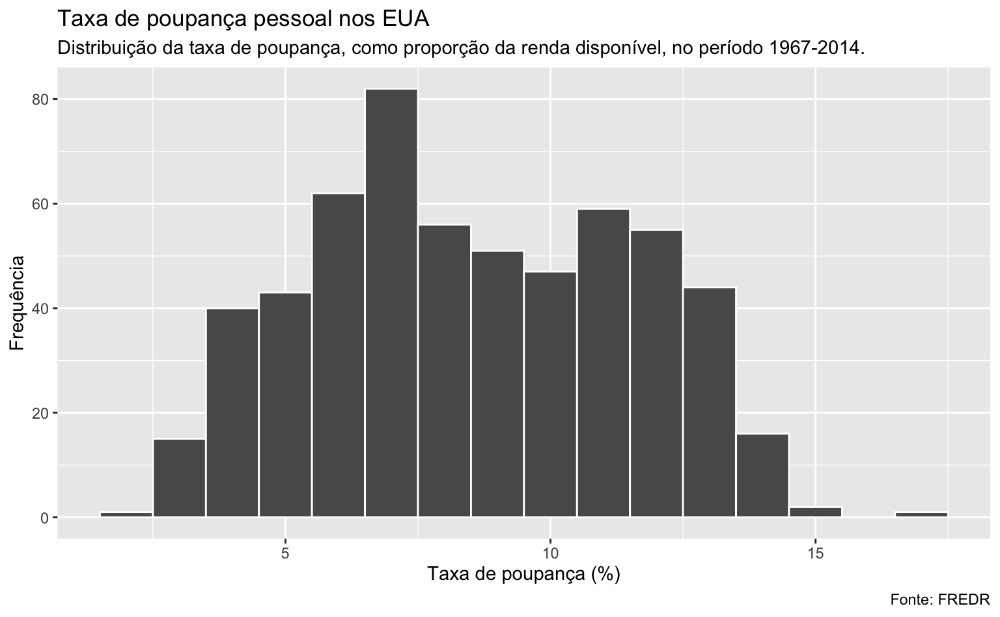
Usando cores para representar variáveis
Os elementos estéticos também podem ser utilizados para representar variáveis nos dados. Vamos voltar para a função aes(). Como expliquei acima, esta função “transforma” nossos dados em elementos visuais. Nos casos acima, ela mapeia a variável x nas colunas do histograma.
Mas também podemos mapear uma coluna para um elemento estético como o fill, por exemplo. O resultado é um gráfico em que a cor de cada coluna vai corresponder a uma variável da nossa base de dados.
Agora, vamos utilizar a base de dados txhousing que compila informações do mercado imobiliário das principais cidades do estado do Texas, nos EUA. Como a base inclui mais de 40 cidades vamos restringi-la para apenas quatro cidades: Austin, Dallas, Houston e San Angelo. Vamos visualizar a distribuição da variável median que registra o valor mediano de venda mensal dos imóveis em cada cidade. A variável city indica o nome da cidade.
head(txhousing)| city | year | month | sales | volume | median | listings | inventory | date |
|---|---|---|---|---|---|---|---|---|
| Abilene | 2000 | 1 | 72 | 5380000 | 71400 | 701 | 6 | 2000 |
| Abilene | 2000 | 2 | 98 | 6505000 | 58700 | 746 | 7 | 2000 |
| Abilene | 2000 | 3 | 130 | 9285000 | 58100 | 784 | 7 | 2000 |
| Abilene | 2000 | 4 | 98 | 9730000 | 68600 | 785 | 7 | 2000 |
| Abilene | 2000 | 5 | 141 | 10590000 | 67300 | 794 | 7 | 2000 |
| Abilene | 2000 | 6 | 156 | 13910000 | 66900 | 780 | 7 | 2000 |
Queremos um gráfico em que cada cidade tenha uma cor diferente, então, a variável city deve aparecer dentro da função aes(). O código abaixo primeiro organiza os dados e depois monta o gráfico. Agora, cada cidade tem uma cor diferente e as colunas são “empilhadas” umas sobre as outras.
# Cria um vetor com as cidades selecionadas
cities <- c("Austin", "Dallas", "Houston", "San Angelo")
# Seleciona apenas as linhas que contêm informações sobre estas cidades
subtxhousing <- subset(txhousing, city %in% cities)
ggplot(data = subtxhousing, aes(x = median)) +
geom_histogram(aes(fill = city))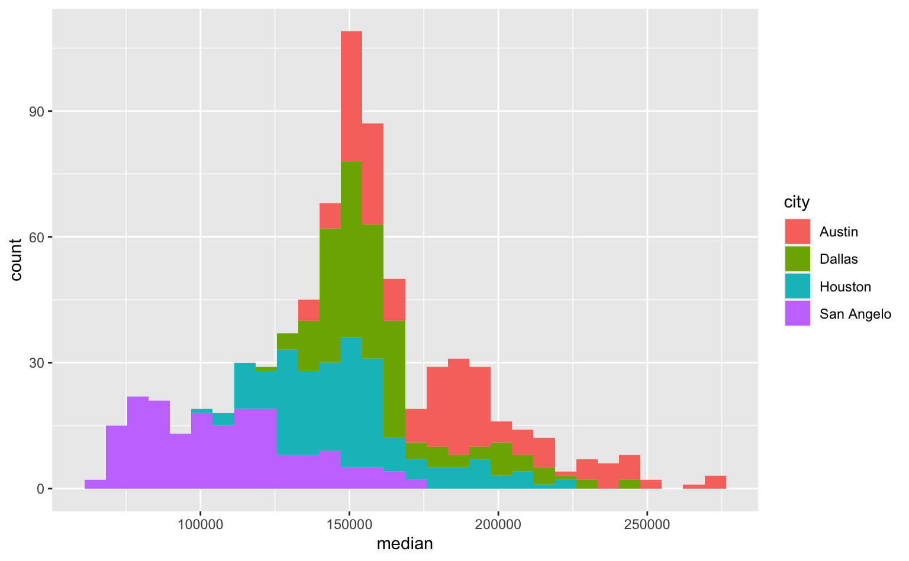
No gráfico acima, conseguimos ver, por exemplo, que o valor mais frequente de venda está em torno de 150 mil. Além disso, pode-se ver como os valores de venda em San Angelo costumam ser menores do que os valores de venda em Austin.
Para ter maior controle sobre as cores e sobre a legenda usamos a função scale_fill_manual() e a função theme().
ggplot(data = subtxhousing, aes(x = median)) +
geom_histogram(
# Mapeaia a variável city nas cores das colunas
aes(fill = city),
# Define o número de colunas
bins = 25,
# Define a cor (contorno) das colunas
color = "white") +
# Controla as cores e a legenda
scale_fill_manual(
# Título da legenda
name = "Cidade",
# Cores das colunas
values = c("#264653", "#2a9d8f", "#f4a261", "#e76f51")
) +
# Posiciona a legenda acima do gráfico
theme(legend.position = "top")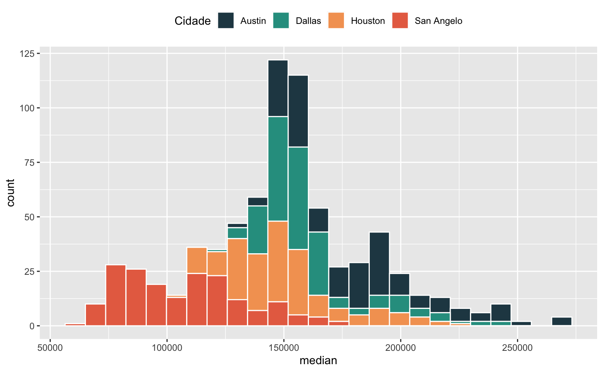
Resumo
Neste post aprendemos o básico da estrutura sintática do ggplot e conseguimos montar alguns histogramas interessantes em poucas linhas de código. Em qualquer gráfico temos três elementos básicos:
- Dados - nossa tabela de dados.
- Função
aes()- que transforma os dados em objetos visuais. - Objeto geométrico (
geom) - que escolhe qual o formato destes objetos visuais.
Alguns pontos importantes:
- Elementos estéticos podem ser constantes (números ou texto) ou variáveis (colunas da base de dados). Elementos variáveis precisam estar dentro da função
aes(). - A escolha do número de colunas/intervalos depende do dado que queremos visualizar. Em geral, é preciso experimentar com números diferentes.
- Se o elemento
fillfor variável é preciso usar a funçãoscale_fill_manual()para controlar as cores e a legenda de cores.
Seguindo esta lógica e somando os objetos podemos criar belos gráficos.